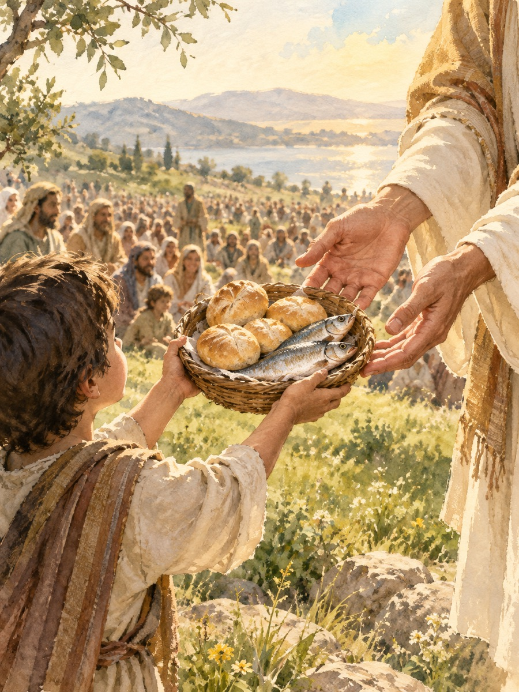

在陪伴年輕人、推動社區弱勢關懷的這條路上，有一種感覺我非常熟悉，那就是「匱乏」。
當我們看著那些在原生家庭中受傷的孩子，或是看著社區裡龐大且錯綜複雜的需要時，再轉頭看看我們手中微薄的經費、有限的人力和極少的時間，那種強烈的無力感經常會湧上心頭。我們心裡最誠實的聲音往往是：「主啊，這個擔子太重了，我們根本扛不起。求祢差派更專業的機構、更有錢的企業來幫忙吧！」
我們習慣用「數字」和「現實」來衡量眼前的問題，當我們發現自己手上的籌碼遠遠不夠時，最理智的選擇，似乎就是請上帝用祂的無所不能，直接把問題帶走。
看似強人所難的耶穌
在《馬可福音》第6章，耶穌的門徒們就面臨了這樣一個龐大的「現實問題」。
當時天色已晚，地點偏僻，而眼前竟然有超過五千個飢腸轆轆的群眾。門徒們非常務實，他們立刻向耶穌提出了一個極具邏輯的建議：「請主打發他們散開，讓他們自己去村子裡買吃的吧！」
這句話的背後，隱藏著一個我們都很熟悉的潛台詞：「主啊，我們真的沒有能力處理這個爛攤子，請祢讓他們走吧，或者祢自己變出食物來解決。」
但耶穌的回應，卻再次打破了人類的邏輯。耶穌對門徒說：「你們給他們吃吧！」
當我們讀到這裡，一定能體會門徒當下的錯愕。聖經記載，門徒立刻開始算帳：「我們要去買二十兩銀子的餅給他們吃嗎？」在門徒的眼中，他們只看見「我們沒有什麼」；但耶穌的眼光，卻停留在「我們有什麼」。
偉大的不是便當，是擘開便當的那雙手
耶穌不知道門徒身上沒錢嗎？耶穌不知道五個餅和兩條魚根本不夠塞牙縫嗎？祂當然知道。那位能用一句話創造宇宙萬物的神，絕對有能力直接從天上降下嗎哪，讓每個人吃到飽。
但耶穌沒有選擇獨自展現神力，祂反而要求門徒去把僅有的一點點食物找出來，交在祂的手中。聖經的意思很清楚，耶穌從來沒有要求門徒去「變」出食物，祂只是邀請他們把手上僅有的東西「給出去」。
這是一個極度美麗的畫面：當門徒願意交出那少得可憐的五餅二魚時，耶穌接過來，祝謝了，擘開，遞給門徒去分。奇蹟，就在這個傳遞的過程中發生了。不僅五千人吃飽了，最後還剩下了十二個籃子。
神蹟的關鍵，從來就不在於那個小男孩的便當有多豐盛，也不在於門徒有多會分配食物。神蹟之所以發生，完全是因為那雙接過便當、擘開便當的上帝之手，充滿了無限的創造與祝福的大能。上帝不需要我們擁有龐大的資源才能動工，祂只需要我們有一顆「願意給出去」的心。
放下計算，交出你的五餅二魚
在建立教會、推動各項事工的時候，我深深體會到，我們能給的真的很少。我們沒有最頂級的設備，沒有最龐大的團隊，我們能付出的，也許只是一次充滿耐心的陪伴、一個真誠的擁抱、或是一點點微薄的經費。
有時候我們會覺得：「這點東西拿出來有什麼用？還是算了吧，等以後我準備得更好、更有能力了再來服事。」
但上帝今天正在對我們發出邀請。祂不需要我們成為百萬富翁才能去關懷弱勢，祂也不需要我們成為頂尖專家才能去陪伴年輕人。祂看著我們手中那微不足道的熱情與資源，溫柔地說：「交給我吧。」
不要再用自己的計算去限制上帝的作為。我們手上的五餅二魚，留在我們自己口袋裡，就永遠只是一頓吃不飽的午餐；但當我們願意帶著信心，把它交在全能上帝的手中時，祂那超越一切的偉大力量，就能讓這份微小的奉獻，成為餵飽無數飢渴生命的豐盛恩典。
M+ 實戰操練
反思提問 (Connection)
在你目前的生活、家庭或服事中，有什麼巨大的需要讓你覺得「我根本無能為力」？在面對這個需要時，你手中其實握著什麼微小的「五餅二魚」（例如：一點點的時間、一句鼓勵的話、一個小小的專長），是你一直覺得「這沒有用」而不敢交出去的？
真理宣告 (Transition)
我宣告，上帝的豐富永遠大過我的缺乏！我不再用自己的有限去框限上帝的無窮。我承認自己能給的微不足道，但我深信，那位偉大的神能將我微小的奉獻，轉化為豐盛的神蹟。我要勇敢交出我的五餅二魚，讓上帝的大能來成就一切！
今日行動 (Action Plan)
今天，不要再去計算自己「缺什麼」，而是拿出你「有什麼」。花十分鐘去傾聽一個需要陪伴的人，或是把一個你覺得微不足道的資源分享出去。把結果交給上帝，單純地享受「給出去」的喜樂。
